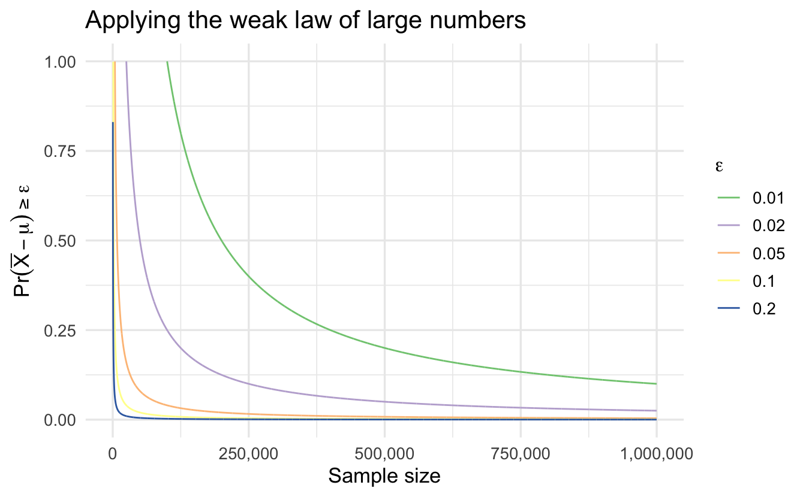

Lecture 11 Properties of random variables and limit theorems
Learning objectives
- Define iterated expectations
- Demonstrate how to change coordinates for a probability density function
- Define moment generating functions and transformations
- Consider the impact of limit theorems on core statistical techniques
- Prove the weak law of large numbers
- Connect principles of convergence to estimators through the central limit theorem
Supplemental readings
- Chapter 5 Bertsekas and Tsitsiklis (2008)
- Equivalent reading from Bertsekas and Tsitsiklis lecture notes
11.1 Iterated Expectations
Suppose \(X\) and \(Y\) are random variables. Then
\[ \E[X] = \E[\E[X|Y]] \]
- Inner Expectation is \(E[X|Y] = \int_{-\infty}^{\infty} x f_{X|Y} (x|y) dx\).
- Outer expectation is over \(y\).
Proof (Iterated expectations). \[ \begin{aligned} \E[\E[X|Y]] & = \int_{-\infty}^{\infty} \int_{-\infty}^{\infty} x f_{X|Y} (x|y) f_{Y}(y) dx dy \nonumber \\ &= \int_{-\infty}^{\infty} \int_{-\infty}^{\infty} x f_{X|Y} (x|y) f_{Y}(y) dy dx \nonumber \\ & = \int_{-\infty}^{\infty} x \int_{-\infty}^{\infty} f(x, y) dy dx \nonumber \\ & = \int_{-\infty}^{\infty} x f_{X}(x) dx \nonumber \\ & = \E[X] \nonumber \end{aligned} \]
Definition 11.1 (Beta distribution) Suppose \(Y\) is a continuous random variable with \(Y \in [0,1]\) and pdf of \(Y\) given by
\[ f(y) = \frac{\Gamma(\alpha_1 + \alpha_2)}{\Gamma(\alpha_{1} ) \Gamma(\alpha_{2})} y^{\alpha_{1} - 1} (1- y)^{\alpha_{2} - 1 } \nonumber \]
Then we will say \(Y\) is a Beta distribution with parameters \(\alpha_{1}\) and \(\alpha_{2}\). Equivalently,
\[ Y \sim \text{Beta}(\alpha_{1}, \alpha_{2} ) \nonumber \]
- Beta is a distribution on proportions
- Beta is a special case of the Dirichlet distribution
- \(\E[Y] = \frac{\alpha_{1}}{\alpha_{1} + \alpha_{2}}\)
Suppose
\[ \begin{aligned} \pi & \sim \text{Beta}(\alpha_{1}, \alpha_{2}) \nonumber \\ Y|\pi, n & \sim \text{Binomial}(n, \pi)\nonumber \end{aligned} \]
What is \(\E[Y]\)?
\[ \begin{aligned} \E[Y] & = \E[\E[Y| \pi]] \nonumber \\ & = \int_{-\infty}^{\infty} \sum_{j = 0}^{N} {{N}\choose{j}} j p(j|\pi) f(\pi) d\pi \nonumber \\ & = \int_{-\infty}^{\infty} N \pi f(\pi) d\pi \nonumber \\ & = N \frac{\alpha_{1}}{\alpha_{1} + \alpha_{2}} \nonumber \end{aligned} \]
11.2 Change of coordinates
Suppose \(X\) is a random variable and \(Y = g(X)\), where \(g:\Re \rightarrow \Re\) that is a \(monotonic\) function.
Define \(g^{-1}:\Re \rightarrow \Re\) such that \(g^{-1}(g(X)) = X\) and is differentiable. Then,
\[ \begin{aligned} f_{Y}(y) & = f_{X}(g^{-1}(y))\left|\frac{\partial g^{-1}(y)}{\partial y} \right| \text{ if } y = g(x) \text{ for some } x \nonumber \\ & = 0 \text{ otherwise } \nonumber \end{aligned} \]
Proof (Change of coordinates). Suppose \(g(\cdot)\) is monotonically increasing (WLOG)
\[ \begin{aligned} F_{Y}(y) & = \Pr(Y \leq y) \nonumber \\ & = \Pr(g(X) \leq y) \nonumber \\ & = \Pr(X \leq g^{-1}(y) ) \nonumber \\ & = F_{X}(g^{-1}(y) ) \nonumber \end{aligned} \]
Now differentiating to get the pdf
\[ \begin{aligned} \frac{\partial F_{Y}(y)}{\partial y} & = \frac{\partial F_{X}(g^{-1}(y) )} {\partial y } \nonumber \\ & = f_{X}(g^{-1}(y) ) \frac{\partial g^{-1}(y)}{\partial y } \nonumber \end{aligned} \]
Then this is a pdf because \(\frac{\partial g^{-1}(Y)}{\partial y } > 0\).
Suppose \(X\) is a random variable with pdf \(f_{X}(x)\). Suppose \(Y = X^{n}\). Find \(f_{Y}(y)\).
Then \(g^{-1} (x) = x^{1/n}\).
\[ \begin{aligned} f_{Y}(y) & = f_{X}(g^{-1}(y)) \left| \frac{\partial g^{-1}(Y)}{\partial y } \right| \nonumber \\ & = f_{X} (y^{1/n} ) \frac{y^{\frac{1}{n} - 1}}{n} \nonumber \end{aligned} \]
Weâve used this to derive many of the pdfs.
- Normal distribution
- Chi-Squared Distribution
11.3 Moment generating functions
Definition 11.2 (Moment) Suppose \(X\) is a random variable with pdf \(f\). Define,
\[ \E[X^{n}] = \int_{-\infty}^{\infty} x^{n} f(x) dx \nonumber \]
We will call \(X^{n}\) the \(n^{\text{th}}\) moment of \(X\).
By this definition \(\Var(X) = \text{Second Moment} - \text{First Moment}^{2}\). We are assuming that the integral converges.
Proposition 11.1 (Moment generating function) Suppose \(X\) is a random variable with pdf \(f(x)\). Call \(M(t) = E[e^{tX}]\),
\[ \begin{aligned} M(t) & = \E[e^{tX}] \nonumber \\ & = \int_{-\infty}^{\infty} e^{tx} f(x) dx \nonumber \end{aligned} \]
We will call \(M(t)\) the moment generating function, because:21
\[ \frac{\partial^{n} M (t) }{\partial^{n} t}|_{0} = E[X^{n}] \nonumber \]
Proof (Moment generating function). Recall the Taylor Expansion of \(e^{tX}\) at \(0\),
\[ e^{tX} = 1 + tx + \frac{t^2 x^2}{2!} + \frac{t^3 x^3}{3!} + \ldots \nonumber \]
Then,
\[ \E[e^{tX} ] = 1 + t\E[X] + \frac{t^2}{2!} \E[X^2] + \frac{t^3}{3!} \E[X^3] + \ldots \nonumber \]
Differentiate once:
\[ \begin{aligned} \frac{\partial M(t)}{\partial t} & = 0 + \E[X] + \frac{2t}{2!} \E[X^2] + \ldots \nonumber \\ M^{'}(0) & = 0 + \E[X] + 0 + 0 \ldots \nonumber \end{aligned} \]
Differentiate \(n\) times:
\[ \begin{aligned} \frac{\partial^{n} M(t)}{\partial^{n} t } & = 0 + 0 + 0 + \ldots + \frac{n \times n-1 \times \ldots 2 \times t^{0} \E[X^{n}] }{n!} + \frac{n!t \E[X^{n+1}] }{(n+ 1)! } + \ldots \nonumber \\ & = \frac{n! \E[X^{n}] }{n!} + \frac{n!t \E[X^{n+1}] }{(n+ 1)! } + \ldots \nonumber \end{aligned} \]
Evaluated at 0, yields \(M^{n}(0) = \E[X^{n}]\).
If two random variables, \(X\) and \(Y\) have the same moment generating functions, then \(F_{X}(x) = F_{Y}(x)\) for almost all \(x\).
11.3.1 The moments of the normal distribution
Suppose \(Z \sim N(0,1)\).
\[ \E[e^{tX}] = \frac{1}{\sqrt{2\pi}} \int_{-\infty}^{\infty} e^{tx} e^{-x^2/2} dx \nonumber \]
\[ tx - \frac{1}{2} x^2 = -\frac{1}{2}\left( ( x - t)^2 - t^2 \right) \]
\[ \begin{aligned} \E[e^{tX}] & = \frac{1}{\sqrt{2\pi}} e^{\frac{t^{2}}{2}}\int_{-\infty}^{\infty} e^{-(x- t)^2/2} dx \nonumber \\ & = e^{\frac{t^{2}}{2}} \nonumber \end{aligned} \]
11.3.2 Extracting moments of the normal distribution
\[ \begin{aligned} M^{'}(0) & = \E[X] = e^{t^2/2} t |_{0} = 0 \nonumber \\ M^{''} (0 ) & = \E[X^2] = e^{t^2/2} (t^2 + 1) |_{0} = 1 \nonumber \\ M^{'''} (0) & = \E[X^3] = e^{t^2/2} t (t^2 + 3) |_{0} = 0 \nonumber \\ M^{''''} (0) & = \E[X^4] = e^{t^2/2} (t^4 + 6t^2 + 3)|_{0} = 3 \nonumber \\ M^{5} (0) & = \E[X^5] = e^{t^2/2} t (t^4 + 10t^2 + 15)|_{0} = 0 \nonumber \\ M^{6} (0) & = \E[X^6] = e^{t^2/2} (t^6 + 15t^4 + 45t^2 + 15 )|_{0} = 15 \nonumber \end{aligned} \]
11.4 Sequences of independent random variables
Suppose \(X_{i}\) are a sequence of independent random variables. Define
\[ Y = \sum_{i=1}^{N} X_{i} \nonumber \]
Then
\[ M_{Y}(t) = \prod_{i=1}^{N} M_{X_{i}}(t) \nonumber \]
Proof. \[ \begin{aligned} M_{Y}(t) & = \E[e^{tY}] \nonumber \\ & = \E[e^{t\sum_{i=1}^{N} X_{i} } ] \nonumber \\ & = \E[e^{tX_{1} + tX_{2} + \ldots tX_{N} } ] \nonumber \\ & = \E[e^{tX_{1} }]E[e^{tX_{2} }] \ldots \E[e^{tX_{N} }] \text{ (by independence) } \nonumber \\ & = \prod_{i=1}^{N} \E[e^{tX_{i}}] \nonumber \end{aligned} \]
11.5 Inequalities and limit theorems
11.5.1 Limit theorems
What happens when we consider a long sequence of random variables? What can we reasonably infer from data?
- Laws of large numbers: averages of random variables converge on expected value?
- Central Limit Theorems: sum of random variables have normal distribution?
Weâll focus on intuition for both, but weâll prove some stuff too.
11.5.2 Weak law of large numbers
Proof plan:
- Markovâs Inequality
- Chebyshevâs Inequality
- Weak Law of Large Numbers
11.5.2.1 Markovâs inequality
Suppose \(X\) is a random variable that takes on non-negative values. Then, for all \(a>0\),
\[ \Pr(X\geq a) \leq \frac{\E[X]}{a} \nonumber \]
Proof (Markov's inequality). For \(a>0\),
\[ \begin{aligned} \E[X] & = \int_{0}^{\infty} x f(x) dx \nonumber \\ & = \int_{0}^{a} x f(x) dx + \int_{a}^{\infty} x f(x) dx \nonumber \end{aligned} \]
Because \(X\geq 0\),
\[ \begin{aligned} \E[X] \geq \int_{a}^{\infty} x f(x) dx \geq \int_{a}^{\infty} a f(x)dx = a P(X \geq a )\nonumber \\ \frac{\E[X]}{a} \geq P(X \geq a )\nonumber \end{aligned} \]
11.5.2.2 Chebyshevâs inequality
If \(X\) is a random variable with mean \(\mu\) and variance \(\sigma^2\), then, for any value \(k>0\),
\[ \Pr(|X - \mu| \geq k) \leq \frac{\sigma^2}{k^2} \nonumber \]
Proof (Chebyshev's inequality). Define the random variable
\[ Y = (X - \mu)^2 \nonumber \]
Where \(\mu = E[X]\).
Then we know \(Y\) is a non-negative random variable. Set \(a = k^2\).
Applying the inequality:
\[ \begin{aligned} \Pr(Y \geq k^2) \leq \frac{\E[Y]}{k^2} \nonumber \\ \Pr( (X- \mu)^2 \geq k^2) \leq \frac{\E[(X - \mu)^2]}{k^2} \nonumber \\ \Pr( (X- \mu)^2 \geq k^2) \leq \frac{\sigma^2}{k^2}\nonumber \end{aligned} \]
Further we know that
\[ (X - \mu)^2 \geq k^2 \nonumber \]
Implies that
\[ |X - \mu| \geq k \nonumber \]
Thus, we have shown
\[ \Pr( |X- \mu| \geq k) \leq \frac{\sigma^2}{k^2}\nonumber \]
11.6 Sequence of random variables
Sequence of independent and identically distributed (i.i.d.) random variables.
Sequence: \(X_{1}, X_{2}, \ldots, X_{n}, \ldots\)
Think of a sequence as sampled data:
- Suppose we are drawing a sample of \(N\) observations
- Each observation will be a random variable, say \(X_{i}\)
- With realization \(x_{i}\)
11.6.1 Mean/variance of sample mean
Let \(X_{1}, X_{2}, \ldots, X_{n}\) be a random sample from a distribution with mean \(\mu\) and variance \(\sigma^2\). Let \(\bar{X}_{n}\) be the sample mean. Then
\[ \E[\bar{X}_{n}] = \mu \text{ and } \Var(\bar{X}_{n}) = \frac{\sigma^2}{n} \]
Proof. \[ \begin{aligned} \E[\bar{X}_{n}] & = \frac{1}{n}\sum_{i=1}^{n} \E[X_{i}] \nonumber \\ & = \frac{1}{n} n \mu = \mu \nonumber \end{aligned} \]
\[ \begin{aligned} \Var(\bar{X}_{n}) & = \frac{1}{n^2} \Var(\sum_{i=1}^{n} X_{i}) \nonumber \\ &= \frac{1}{n^2} \sum_{i=1}^{n} \Var(X_{i}) \nonumber \\ & = \frac{1}{n^2} n \sigma^2 = \frac{\sigma^2}{n} \nonumber \end{aligned} \]
11.6.2 Weak law of large numbers
Suppose \(X_{1}, X_{2}, \ldots, X_{n}\) is a random sample from a distribution with mean \(\mu\) and \(Var(X_{i})= \sigma^2\). Then, for all \(\epsilon >0\),
\[ \Pr\left\{ \left| \frac{X_{1} + X_{2} + \ldots + X_{n} }{n} -\mu \right| \geq \epsilon \right\} \rightarrow 0 \text{ as } n \rightarrow \infty \nonumber \]
Proof. From our previous proposition
\[ \frac{\text{E}[X_{1} + X_{2} + \cdots + X_{n} ]}{n} = \frac{\sum_{i=1}^{n} E[X_{i}] }{n} = \mu \nonumber \]
Further,
\[ \E[ (\frac{\sum_{i=1}^{n} X_{i} - \mu}{n} )^2] = \frac{\Var(X_{1} + X_{2} + \cdots + X_{n} )}{n^2} = \frac{ \sum_{i=1}^{n} \Var(X_{i}) }{n^2} = \frac{\sigma^2}{n} \nonumber \]
Apply Chebyshevâs Inequality:
\[ \Pr\left\{ \left| \frac{X_{1} + X_{2} + \ldots + X_{n} }{n} -\mu \right| \geq \epsilon \right\}\leq \frac{\sigma^2}{n \epsilon^2} \nonumber \]
Suppose \(X_{1}, X_{2}, \ldots\) are i.i.d. normal distributions,
\[ X_{i} \sim \text{Normal}(0, 10) \nonumber \]
\[ \Pr\left\{ \left| \frac{X_{1} + X_{2} + \ldots + X_{n} }{n} -\mu \right| \geq 0.1 \right\} \text{ as } n \rightarrow \infty\nonumber \]
Suppose we want to guarantee that we have at most a \(0.01\) probability of being more than \(0.1\) away from the true \(\mu\). How big do we need \(n\)?
\[ \begin{aligned} 0.01 & = \frac{10}{n (0.1^2) } \nonumber \\ n & = \frac{1000}{0.01} \nonumber \\ n & = 100,000 \end{aligned} \]

11.7 Sequences and convergence
Sequence (refresher):
\[ \left\{a_{i} \right\}_{i=1}^{\infty} = \left\{a_{1}, a_{2}, a_{3}, \ldots, a_{n}, \ldots, \right\} \nonumber \]
Definition 11.3 We say that the sequence \(\left\{a_{i} \right\}_{i=1}^{\infty}\) converges to real number \(A\) if for each \(\epsilon>0\) there is a positive integer \(N\) such that for \(n\geq N\), \(|a_{n} - A| < \epsilon\)
Sequence of functions:
\[ \left\{ f_{i} \right\}_{i=1}^{\infty} = \left\{f_{1}, f_{2}, f_{3}, \ldots, f_{n}, \ldots, \right\}\nonumber \]
Definition 11.4 (Pointwise convergence) Suppose \(f_{i}: X \rightarrow \Re\) for all \(i\). Then \(\left\{ f_{i} \right\}_{i=1}^{\infty}\) converges pointwise to \(f\) if, for all \(x \in X\) and \(\epsilon> 0\), there is an \(N\) such that for all \(n\geq N\),
\[ |f_{n} (x) - f(x)|<\epsilon \nonumber \]
This is as strong of a statement as weâre likely to make in statistics.
11.7.1 Convergence definitions
Define \(\widehat{\theta}_{n}\) to be estimator for \(\theta\) based on \(n\) observations.
Sequence of estimators: increasing sample size
\[ \left\{\widehat{\theta}_{i}\right\}_{i=1}^{n} = \left\{\widehat{\theta}_{1}, \widehat{\theta}_{2}, \widehat{\theta}_{3}, \ldots, \widehat{\theta}_{n} \right\} \nonumber \]
Question: What can we say about \(\left\{\widehat{\theta}_{i}\right\}_{i=1}^{n}\) as \(n\rightarrow \infty\)?
- What is the probability \(\widehat{\theta}_{n}\) differs from \(\theta\)?
- What is the probability \(\left\{\widehat{\theta}_{i}\right\}_{i=1}^{n}\) converges to \(\theta\)?
- What is sampling distribution of \(\widehat{\theta}_{n}\) as \(n \rightarrow \infty\) ?
11.7.2 Convergence in probability
Definition 11.5 (Convergence in probability) We will say the sequence \(\widehat{\theta}_{n}\) converges in probability to \(\theta\) (perhaps a non-degenerate RV) if,
\[ \lim_{n\rightarrow\infty} \Pr(|\widehat{\theta}_{n} - \theta | > \epsilon ) = 0 \nonumber \]
For any \(\epsilon>0\)
- \(\epsilon\) is a tolerance parameter: how much error around \(\theta\)?
- In the limit, convergence in probability implies sampling distribution collapses on a spike at \(\theta\)
- \(\left\{\widehat{\theta}_{i}\right\}\) need not actually converge to \(\theta\), only (\(\Pr|\theta_{n}\) - \(\theta| > \epsilon) = 0\)
Example 11.1 Suppose \(S \sim\) Uniform(0,1). Define \(X(s) = s\).
Suppose \(X_{n}\) is defined as follows:
\[ \begin{aligned} X_{1}(s) = s + I(s \in [0,1]) & , X_{2} (s) = s + I(s \in [0,1/2]) \nonumber \\ X_{3}(s) = s + I(s \in [1/2, 1])& , X_{4}(s) = s + I(s \in [0,1/3]) \nonumber \\ X_{5} (s) = s + I(s \in [1/3,2/3]) & , X_{6}(s) = s + I(s \in [2/3, 1]) \nonumber \end{aligned} \]
- Does \(X_{n}(s)\) pointwise converge to \(X(s)\)?
- Does \(X_{n}(s)\) converge in probability to \(X(s)\)?
\[ \Pr(|X_{n} - X | > \epsilon) = \Pr ( s \in [l_{n}, u_{n} ] ) \nonumber \]
Length of \([l_{n}, u_{n}] \rightarrow 0 \Rightarrow P ( s \in [L_{n}, U_{n} ] ) = 0\).
11.7.3 Almost sure convergence
Definition 11.6 We will say the sequence \(\widehat{\theta}_{n}\) converges almost surely to \(\theta\) if,
\[ \Pr(\lim_{n \rightarrow \infty} |\widehat{\theta}_{n} - \theta| > \epsilon ) = 0 \nonumber \]
Stronger: says that sequence converges to \(\theta\) (almost everywhere) )
Think about definition of random variable: \(\widehat{\theta}_{n}\) is a function from sample space to real line.
Almost sure says that, for all outcomes (\(s\)) in sample space (\(S\)) \(s \in S\),
\[ \widehat{\theta}_{n}(s) \rightarrow \theta(s) \nonumber \]
Except for a subset \(\mathcal{N} \subset S\) such that \(\Pr(\mathcal{N}) = 0\).
11.7.3.1 Example
Suppose \(S \sim\) Uniform(0,1). Suppose \(X_{n}\) is defined as follows:
\[ \begin{aligned} X_{1}(s) = s + I(s \in [0,1]) & , X_{2} (s) = s + I(s \in [0,1/2]) \nonumber \\ X_{3}(s) = s + I(s \in [1/2, 1])& , X_{4}(s) = s + I(s \in [0,1/3]) \nonumber \\ X_{5} (s) = s + I(s \in [1/3,2/3]) & , X_{6}(s) = s + I(s \in [2/3, 1]) \nonumber \end{aligned} \]
Does \(X_{n}(s)\) converge almost surely to \(X(s) = s\)?
No! â the sequence doesnât converge for each \(s\). For each value of \(s\) the sequence varies between \(s\) and \(s + 1\) infinitely often.
11.7.4 Convergence in distribution
Weâve talked about \(\widehat{\theta}_{n}\)âs sampling distribution converging to a normal distribution. This is convergence in distribution.
Definition 11.7 (Convergence in distribution) \(\widehat{\theta}_{n}\), with cdf \(F_{n}(x)\), converges in distribution to random variable \(Y\) with cdf \(F(x)\) if
\[ \lim_{n\rightarrow \infty} |F_{n} (x) - F(x) | = 0 \nonumber \]
For all \(x \in \Re\) where \(F(x)\) is continuous.
- Weakest form of convergence almost sure \(\rightarrow\) probability \(\rightarrow\) distribution
- Says that cdfs are equal, says nothing about convergence of underlying random variable
- Useful for justifying use of some sampling distributions
11.7.5 Convergence in distribution \(\not \Rightarrow\) convergence in probability
Define \(X \sim N(0,1)\) and each \(X_{n} = - X\). Then:
\(X_{n} \sim N(0,1)\) for all \(n\) so \(X_{n}\) trivially converges to \(X\). But,
\[ \begin{aligned} \Pr(|X_{n} - X| > \epsilon ) & = \Pr(|X + X| > \epsilon) \nonumber \\ & = \Pr( |2X| > \epsilon) \nonumber \\ & = \Pr(|X| > \epsilon/2) \not \leadsto 0 \end{aligned} \]
11.7.6 Central limit theorem
Let \(X_{1}\), \(X_{2}, \ldots\) be a sequence of independent random variables with mean \(\mu\) and variance \(\sigma^2\). Let \(X_{i}\) have a cdf \(P(X_{i} \leq x) = F(x)\) and moment generating function \(M(t) = \E[e^{tX_{i}}]\) . Let \(S_{n} = \sum_{i=1}^{n} X_{i}\). Then
\[ \lim_{n\rightarrow \infty} P\left( \frac{S_{n} - \mu n }{\sigma\sqrt{n}} \leq x \right) = \frac{1}{\sqrt{2\pi} } \int_{-\infty}^{x} \exp\left( -\frac{z^{2} }{2} \right) dz \nonumber \]
Proof plan:
- Rely on fact that convergence of MGFs \(\leadsto\) convergence in CDFs
- Show that MGFs, in limit, converge on normal MGF
Let \(F_{n}\) be a sequence of cumulative distribution functions with the corresponding moment generating functions \(M_{n}\). \(F\) be a cdf with the moment generating functions \(M\). If \(\lim_{n\rightarrow \infty} M_{n}(t) \rightarrow M(t)\) for all \(t\) in some interval, then \(F_{n}(x) \leadsto F(x)\) for all \(x\) (when \(F\) is continuous).
Suppose \(\lim_{n\rightarrow \infty} a_{n} \rightarrow a\), then
\[ \lim_{n\rightarrow \infty} \left( 1 + \frac{a_{n}}{n}\right)^{n} = e^{a} \nonumber \]
Suppose \(M(t)\) is a moment generating function some random variable \(X\). Then \(M(0) = 1\).
Proof (Central limit theorem). Suppose \(X_{1}, \ldots, X_{n}\) are i.i.d. variables with \(\E[X] = 0\), variance \(\sigma^{2}_{x}\), Moment Generating Function (MGF) \(M_{x}(t)\).
Let \(S_{n} = \sum_{i=1}^{n} X_{i}\) and \(Z_{n} = \frac{S_{n}}{\sigma_{x} \sqrt{n}}\).
\(M_{S_{n}} = (M_{x}(t))^{n}\) and \(M_{Z_{n}} (t) = \left(M_{x} \left(\frac{t}{\sigma_{x} \sqrt{n}} \right) \right)^{n}\)
Using Taylorâs Theorem we can write
\[ M_{x} (s) = M_{x} (0) + s M^{'}_{x}(0) + \frac{1}{2} s^2 M_{x}^{''}(0) + e_{s} \nonumber \]
\(e_{s}/s^2 \rightarrow 0\) as \(s\rightarrow 0\).
Filling in the values we have
\[ M_{x} (s) = 1 + 0 + \frac{\sigma_{x}^{2}}{2} s^2 + \underbrace{e_{s}}_{\text{Goes to zero}} \nonumber \]
Set \(s = \frac{t}{\sigma_{x} \sqrt{n}}\) \(\lim_{n\rightarrow \infty} s \rightarrow 0\). Then
\[ \begin{aligned} M_{Z_{n}}(t) & = \left(1 + \frac{\sigma_{x}^{2}}{2}\left( \frac{t}{\sigma_{x} \sqrt{n}} \right)^{2} \right)^{n} \nonumber \\ & = \left( 1 + \frac{t^{2}/2}{n} \right)^{n} \nonumber \\ \lim_{n\rightarrow \infty} M_{Z_{n}}(t) & = e^{\frac{t^2}{2}}\nonumber \end{aligned} \]
11.7.6.1 Why this matters
The central limit theorem has a wide range of applications in statistics. Most importantly, the central limit theorem eliminates the need for detailed probabilistic model and extended calculations of PMFs and PDFs. Instead, many probabilities can be calculated using a normal CDF table based purely on our knowledge of means and variances. Most of the core techniques for classical statistical inference are derived from this theorem.
References
Assuming that we can interchange derivative and integral.â©ï¸